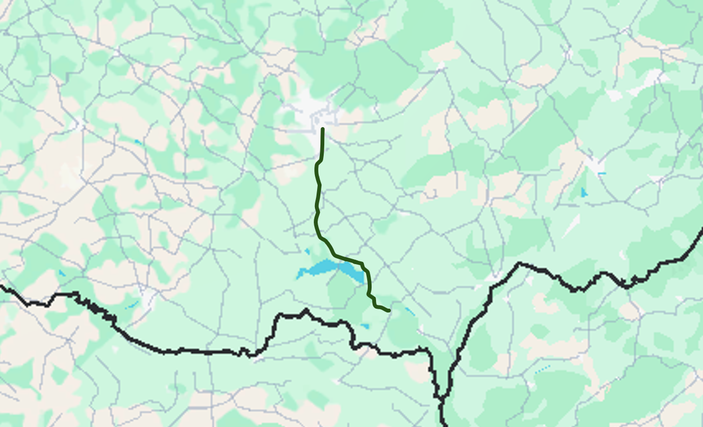
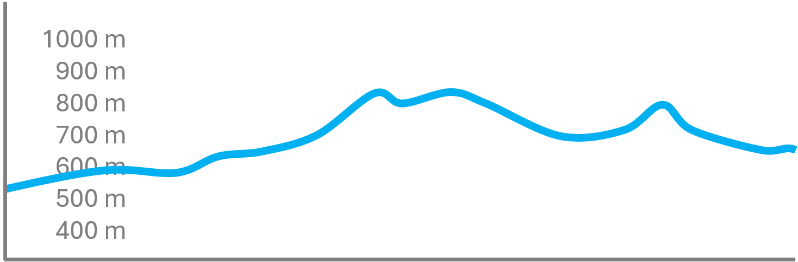

Ještěd je výrazná dominanta u Liberce s unikátním televizním vysílačem a hotelem, oceněným prestižní architektonickou cenou.
Stavba, dílo Karla Hubáčka, se stala symbolem města i celého regionu.
Z vrcholu se otevírají krásné výhledy na Liberec, Jizerské hory i Krkonoše. Ještěd je oblíbeným cílem turistů po celý rok, v létě pro pěší a cyklistiku, v zimě pro lyžování a zimní sporty.
Náročnější trasa
83 km dlouhá trasa (přibližně 11 hodin)


Popis trasy
Trasa začíná na parkovišti u dolní stanice lanovky a nejprve vede po asfaltové silnici směrem k lesu. První úsek je pohodlný a vhodný i pro méně zkušené turisty.
Po zhruba kilometru se cesta mění na zpevněnou lesní stezku s drobnými kameny a kořeny, kde je potřeba dávat pozor na nerovnosti. Ve střední části narazíte na několik prudších stoupání a místy hrubší povrch, zejména po dešti může být kluzký.
Poslední úsek vede otevřenou loukou s vyšší trávou a krásnými výhledy – doporučuje se pevná obuv a kontrola proti klíšťatům. Závěrečných pár set metrů je opět po upravené cestě až k vrcholu s rozhlednou a restaurací.